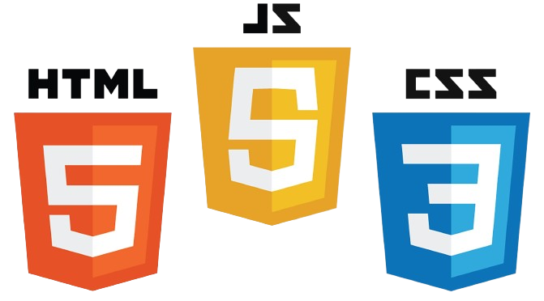

•Към кода на HTML може да се включи и CSS, чрез който се стилизира страницата, текста и др. Добре е използването на CSS вместо HTML стилове, защото в CSS може да се променя стила на нещо едновременно в няколко страници.
•Други езици, който може да бъдат използвани са скриптове (например JavaScript), чрез които се добавя допълнителна динамика на сайта.
